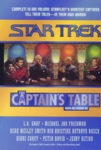
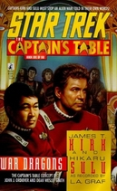
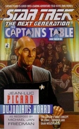
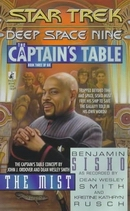
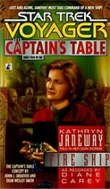
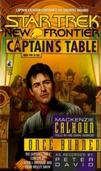
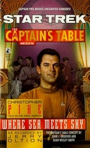
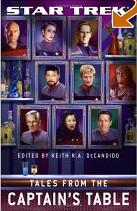

Kapitányok Asztala
A Csillagflotta központjában létezik egy különös hely. Egy bár, ahova kizárólag kapitányok léphetnek be. Kapitányok, kik egymással beszélgetnek szolgálatukról, magánéletükrõl, az univerzum történéseirõl. E sorozat pár betérõ kapitány beszélgetését örökíti meg...
Omnibus - Bemutatkozás
|  | Rövid bevezetõ könyv, a sorozathoz. |
War Dragons - Harci Sárkányok
|  | Kirk kapitány és Sulu kapitány egy története... |
Dujonian's Hoard - Dujoniai Készletek
|  | Picard kapitány meséli el egyik kalandját... |
The Mist - A Köd
|  | Sisko kapitány a Dominiumi háborúról regél... |
Fire Ship - Tüzes Hajó
|  | Janeway egy új hajó parancsnokságát kénytelen átvenni... |
Once Burned - Kiégve
|  | Calhoun kapitány legnagyobb hibájával találja szembe magát... |
Where Sea Meets Sky - Ahol összefut a víz és az ég
|  | Pike kapitány flottába kerülését meséli el... |
Tales from Captain's Table - Mesék a Kapitányi asztaltól
|  | Egy vadonatúj könyv a sorozathoz. Kilenc újabb kapitányi történettel... |
Almenü